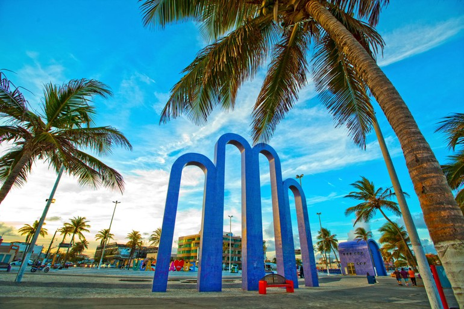
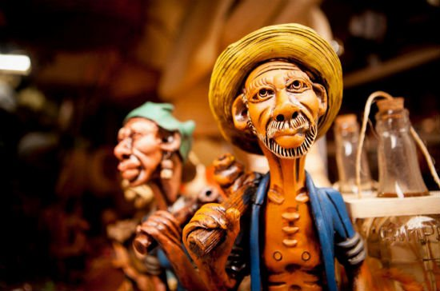

CajuTour
Descubra o charme e a natureza de Sergipe
Explore destinos incríveis, do sertão ao mar.
Explorar destinos
A riqueza de um Estado que inspira
Sergipe é um tesouro escondido entre as águas do Nordeste. De suas praias de areia branca e mar azul intenso a uma tradição cultural vibrante que une o forró ao sabor da nossa culinária, cada canto do estado oferece uma experiência única.

Sobre nós
Missão
Valorizar os destinos sergipanos, conectando pessoas à cultura, natureza e história local de forma autêntica e inesquecível.
Valores
Respeito à diversidade cultural, fomento ao turismo consciente, hospitalidade sergipana e valorização das comunidades locais.